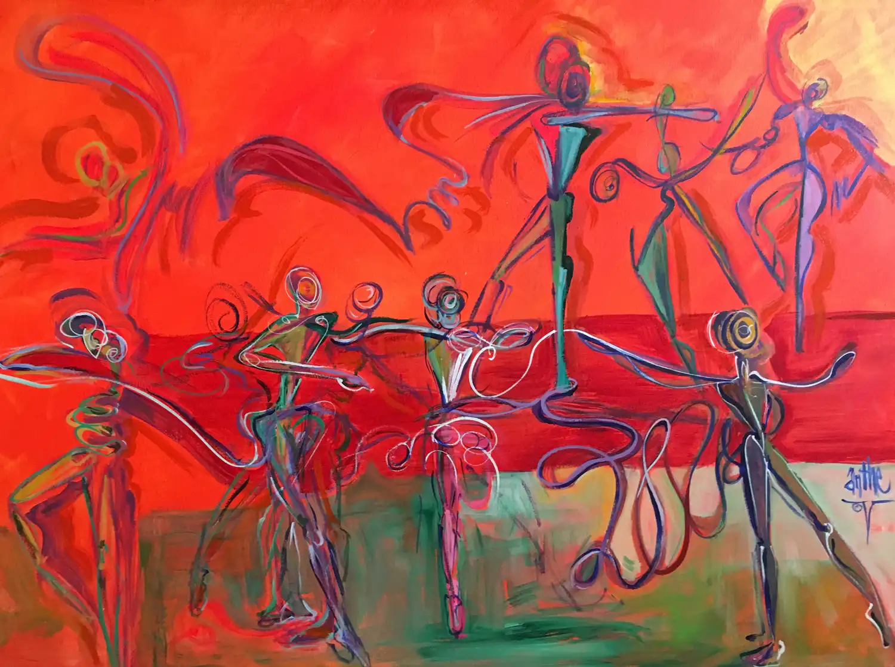
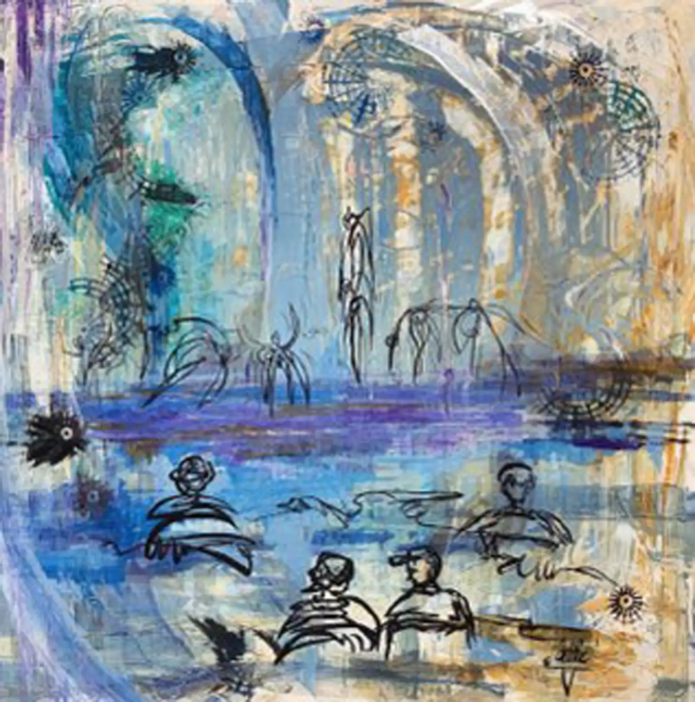
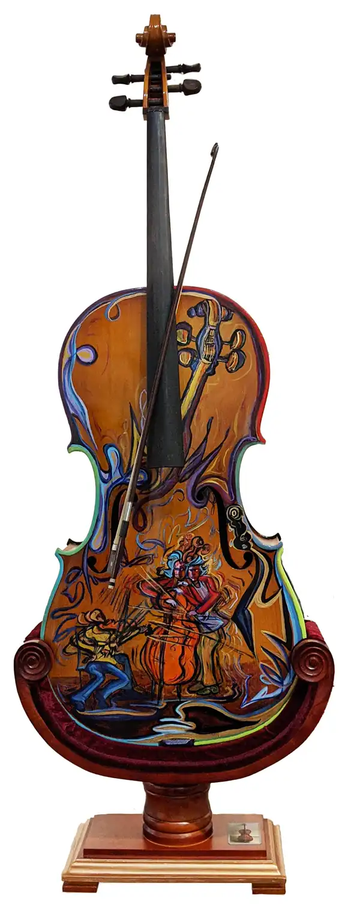
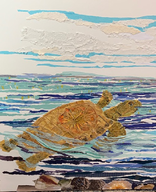
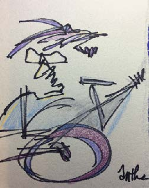

Gallery Studio 103 → The collection
The collection
Originals, and hand-pulled original prints. Everything on this page is drawn from one row in the Studio Ledger — when Anthe marks a piece sold, it changes here.





495 more pieces are already in the ledger.
They are catalogued — number, medium, where they are, whether they sold — but most of them are still waiting on a photograph. Each one appears here the moment a picture is attached to its row. Nothing has to be rebuilt, and nothing has to be paid for.
Originals
One of one.
The painting, drawing or collage itself — the object Anthe made. When it sells it is gone, and its row records who has it and when it left the studio.
Original prints
Not reproductions.
An original print is pulled by hand from a plate or block the artist made — it is an original work in its own right, in a limited edition, signed and numbered. It is not a photograph of a painting. The collection keeps the two apart, because they are not the same thing.